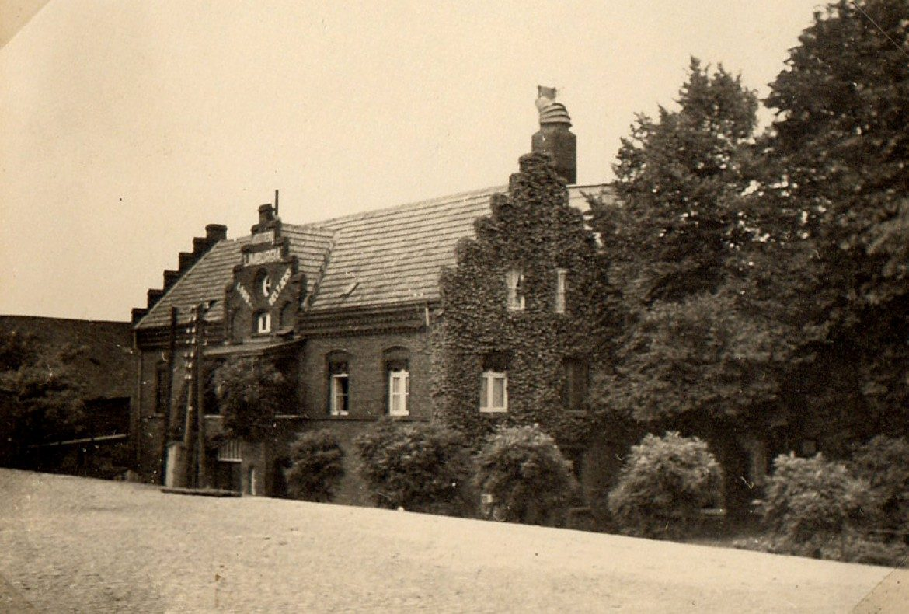
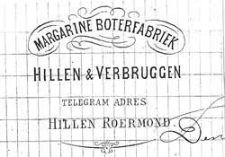

Een mislukte suikerfabriek als vertrekpunt
Het pand waar dit verhaal zich afspeelt, begon niet als zuivelfabriek. Rond 1877-1878 vestigden Leon Hermans (afkomstig van kasteel Heel) en zijn compagnon Mathis Niessen er een suiker- en glucosefabriek. Het werd een financieel debacle: binnen ongeveer een jaar ging de onderneming failliet, en de fabriek werd inclusief machines geveild.
Op de veiling van 23 december 1879 kocht een zekere ‘Alexander Hillen’ een kiezelzeef voor 1 gulden — een klein bedrag, maar de bron noemt hem expliciet “een latere eigenaar van de fabriek”. Enkele dagen eerder, op 12 december 1879, was het pand voor 4.500 gulden overgedragen aan ‘leden van de familie Hillen te Grave’, via notaris Laurens Linssen te Roermond.
Van kunstboter tot moderne zuivelfabriek
De nieuwe eigenaars richtten er aanvankelijk geen mouterij op, maar de ‘Margarine- en Kunstboterfabriek Hillen-Verbruggen’. Alexander Hillen bleef als vennoot en eigenaar nauw bij de onderneming betrokken; zijn compagnon was Guillaume Hubert Verbruggen, afkomstig uit Luik.
Omdat de zaken voorspoedig verliepen, werd op 28 augustus 1883 de eerste steen gelegd voor een grootschalige uitbreiding: een hypermoderne stoom-zuivelfabriek onder de firmanaam Hillen-Verbruggen. Daarmee werd het de derde zuivelfabriek van heel Nederland, na die van Winschoten en Edam — destijds een van de meest winstgevende en modernste sectoren van het land, met een sterk groeiende export van Nederlandse boter naar onder meer Engeland en Duitsland.
Een bijzonder detail dat de familie in een veel bredere, internationale zakenwereld plaatst: de dochter van compagnon Verbruggen trouwde later met Anton Jurgens — de latere margarine-magnaat wiens bedrijf via een fusie mede aan de basis stond van wat vandaag Unilever is.

Verkoop en tweede leven als mouterij
In 1896 verkochten de eigenaars de fabriek aan Louis Beltjens, een 38-jarige handelsreiziger. Pas onder zijn leiding werd het complex daadwerkelijk omgebouwd tot mouterij: de ‘Moutfabriek Limburgia’.
Tijdens de Tweede Wereldoorlog bezetten de Duitsers de fabriek en gebruikten het complex als opslagplaats voor etenswaren en wijn die via de ‘IJzeren Rijn’ vanuit Frankrijk naar Mönchengladbach werden vervoerd. In 1945 brandde de houten eesttoren af; in 1947 verrees op diezelfde plek de huidige, kenmerkende bakstenen toren. In 1953 werd de fabriek nog uitgebreid met een opslagruimte en productieloods.
In 1974 verhuisde de familie Beltjens en werd de moutfabriek verkocht. Het pand kwam leeg te staan en raakte ernstig in verval — ruim dertig jaar lang, pal aan het spoor in een Roermondse woonwijk.

Restauratie tot rijksmonument
In 2005 kocht Henk Wolters het vervallen complex van de gemeente Roermond. Kern Architecten restaureerde het pand met respect voor de geschiedenis tot een duurzame werkplek — vandaag de dag hun eigen kantoor, en een gerestaureerd rijksmonument aan de Maria Theresialaan.

Hoe zeker weten we dit? — een woord over bewijsvoering
De naam ‘Alexander Hillen’ komt in de Roermondse bronnen letterlijk voor, maar geen enkele bron zegt met zoveel woorden dat dit dezelfde Alexander Hillen (1821–1898) is als de Blerickse voorvader in onze stamboom. We hebben dit stap voor stap onderzocht en zijn tot de volgende, onderbouwde inschatting gekomen — waarschijnlijk, maar niet 100% sluitend bewezen:
- Geen andere kandidaat gevonden. Er is in Roermond of omstreken geen tweede ‘Alexander Hillen’ opgedoken die de rol beter zou verklaren (o.a. gecheckt via een lokale begraafplaats-index).
- De tweelingbroer had het al druk elders. Alexanders tweelingbroer Johan runde in exact dezelfde jaren (1877–1884) de ijzergieterij in Blerick — dus niet hij, maar mogelijk Alexander had de vrije ruimte voor een tweede onderneming in Roermond.
- De ‘familie Hillen te Grave’ is te verklaren. Alexanders broer Jacobus Hillen trouwde in 1856 in Herpen (bij Grave) en vestigde zich daar; zijn zoon werd zelfs in Grave geboren (1856). Dat verklaart de vermelding in de notariële akte.
- Een blijvende band met Roermond. Een kleinzoon van diezelfde Jacobus werd in 1890 in Roermond zelf geboren — een aanwijzing dat deze familietak generaties lang aan de stad verbonden bleef.
Voor volledige zekerheid zou je het originele bevolkingsregister van Roermond (1875–1895) of de notariële akte van 12 december 1879 zelf moeten inzien bij het Historisch Centrum Limburg — dat is archiefwerk dat niet online te doen is. Tot die tijd behandelen we deze koppeling als aannemelijk, en vermelden we expliciet waar het bewijs indirect blijft.
Bronnen
- HistorieRoermond.nl, ‘Suikerfabriek’ en ‘Boterfabriek “Hillen”’ (foto: Ruud Lamboo-Louwarts)
- Kernarchitecten.com, ‘Het HUIS van Kernarchitecten’ (geschiedenis en restauratie Moutfabriek)
- Stichting Ruimte Roermond, ‘Monumenten, architectuur, stedenbouw in Limburg’
- Genealogie Limburg Wiki, ‘Hermans (Heel)’
- Diverse historische krantenberichten via Delpher.nl